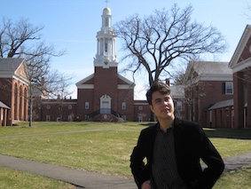

Stephen played from the heart but with a welcome lack of affectation and always with his formidable technique used to further the essence of each composer.
Stephen Whale is an Australian pianist who has also performed in Finland, Holland, Norway and the USA. In the USA, from 2010 onwards he has performed at the Swiss and Bulgarian embassies in Washington D.C.; Klavierhaus, Mannes Recital Hall and Elebash Recital Hall in New York City; Faulkner Recital Hall at Dartmouth College, Morse Recital Hall at Yale University and Cohen Hall in East Stroudsburg University, PA. For the 2015-2016 season he has been appointed Principal Solo Artist for L'Archet Concert Group, and will perform solo and duo recitals at Cohen Hall throughout the season. He has performed on concert series such as the Vaughan Recital Series at Dartmouth College. From 2013 onwards Stephen has also performed several recitals at venues in Nordic countries: in Norway, for example, at the Grieg Museum and Grieghallen in Bergen and at the Kabuso Concert Hall in Øystese as well as in Finland at the Savonlinna Art Gallery, Oulu Main Cathedral and Kangasniemi Hall. Main festival appearances include Bergen International Festival and Holland International Music Sessions. During his formative years his major performances included concertos with the Queensland and Sydney University Orchestras.
Stephen holds a Bachelors degree with Honours from Sydney Conservatorium (Australia), a Masters of Music degree from Yale University (New Haven, CT) and a diploma from the Grieg Academy (Bergen, Norway). Stephen's principal teachers have been Boris Berman, Natalia Sheludiakova, Thomas Sauer and Audun Kayser; he has also studied extensively with Claude Frank, Wei-Yi Yang and Ilmo Ranta. Furthermore, he has participated in masterclasses with pianists such as Stephen Hough and Joaquin Achucarro. Stephen is currently undertaking the DMA program at the Graduate Center, City University of New York, where he was awarded the GC Chancellor's Fellowship. Furthermore, he has won various competitions and awards in Australia, including the Henderson Travelling Scholarship, the Coughtrey/Greville Scholarship, the Australian Postgraduate Award and the PPCA Performer's Trust scholarship.
Stephen has performed solo recitals in interdisciplinary contexts, such as part of the concert series at Savonlinna Art gallery, featuring contemporary Finnish art. He collaborates frequently with singers, such as Archie Worley, and has recently performed recitals with violinists and cellists such as Farkhad Khudyev, Domenic Salerni and Richard Narroway. Stephen has also played in orchestras, including the Australian Youth Orchestra (2006) and Sydney Chamber Opera Orchestra (2012-2013).
Alongside piano performance, Stephen has a particular interest in tonal voice-leading analysis and the philosophical dimension of musical interpretation. His main teachers of music theory include Michael Friedmann, Eric Wen and William Rothstein. Stephen is currently teaching music theory, ear training and keyboard harmony at Aaron Copland School of Music (Queens, NY); previously, he has taught piano at Yale School of Music and Newington College in Sydney.